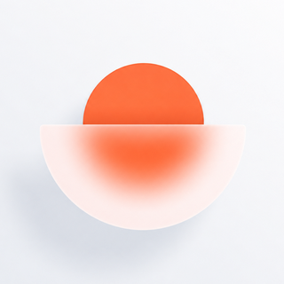

Last updated: 27 September 2026
These terms govern your use of the iOS app Mornee, provided by Mirzabek Sadullaev ("we", "us"). By downloading or using the app you accept them. If you do not accept them, please do not use the app.
Your use is also subject to Apple's Standard End User License Agreement.
Mornee is an alarm clock that requires you to complete a task — solving a problem, moving, or performing an exercise in front of the camera — before the alarm will stop.
This is the most important term here, so it is not buried.
Mornee schedules alarms through iOS. Whether an alarm actually rings depends on your device and on Apple's software: battery level, storage, Focus and Do Not Disturb settings, system updates, force-quitting the app, and bugs in iOS itself are all outside our control. No third-party alarm app can guarantee delivery.
If missing a wake-up would have serious consequences — a flight, an exam, a medical appointment, a work shift — set a second alarm using your device's built-in Clock app or a separate physical alarm clock.
We are not responsible for anything that follows from an alarm that did not ring, rang late, or was dismissed.
The fitness missions ask you to perform push-ups, sit-ups, squats or jumping jacks, often within moments of waking.
Every mission can be exited without completing it — see section 6.
A working alarm and a set of missions are free, with no time limit and no advertising.
A subscription ("PRO") unlocks additional missions, the sunrise alarm, the hard difficulty level, full wake-up history with export, and bedtime reminders.
| Plan | Price | Offer |
|---|---|---|
| Annual | US$24.99 per year | 7-day free trial |
| Monthly | US$4.99 per month | — |
Prices shown in the app apply to your country and may differ from the figures above. The price in the App Store at the moment of purchase is the one that applies.
Manage or cancel at any time in Settings → your name → Subscriptions on your device, or at apps.apple.com/account/subscriptions. Deleting the app does not cancel a subscription.
Purchases are handled by Apple, so refunds are requested from Apple at reportaproblem.apple.com. We cannot issue refunds for App Store purchases ourselves.
Because the app has no account, an existing subscription is restored through your Apple ID using Restore purchases in the app's settings.
By design, no purchase, missing sensor or failed detection can trap you with an alarm you cannot stop. If a mission cannot be completed, the app offers assistance and, after a short delay, an unconditional way to turn the alarm off.
You agree not to reverse engineer, decompile or modify the app, attempt to bypass payment for paid features, or use the app in any unlawful way.
We may add, change or remove features, and may update these terms. Material changes will be reflected by the date at the top of this page. Continuing to use the app after a change means you accept it.
The app is provided "as is" and "as available", without warranties of any kind, to the fullest extent permitted by law. We do not warrant that the app will be uninterrupted, error-free, or that alarms will always be delivered.
To the fullest extent permitted by law, our total liability arising out of your use of the app is limited to the amount you paid us for it in the twelve months before the claim.
Nothing in these terms limits liability that cannot be limited by law, including liability for death or personal injury caused by negligence.
Mirzabek Sadullaev
mirzabeksmrm77@gmail.com
Последнее обновление: 27 сентября 2026 г.
Эти условия регулируют использование вами приложения для iOS Mornee, предоставляемого Мирзабеком Садуллаевым («мы», «нас»). Загружая или используя приложение, вы принимаете их. Если вы с ними не согласны, пожалуйста, не используйте приложение.
Использование приложения также регулируется Стандартным лицензионным соглашением с конечным пользователем компании Apple.
Mornee — это будильник, который требует выполнить задание: решить задачу, подвигаться или сделать упражнение перед камерой, — прежде чем сигнал прекратится.
Это самый важный пункт здесь, поэтому он не спрятан в конце.
Mornee планирует будильники средствами iOS. Прозвонит ли будильник фактически, зависит от вашего устройства и программного обеспечения Apple: уровень заряда, свободная память, настройки режимов «Фокусирование» и «Не беспокоить», обновления системы, принудительное закрытие приложения и ошибки в самой iOS — всё это вне нашего контроля. Ни одно стороннее приложение-будильник не может гарантировать срабатывание.
Если пропущенное пробуждение будет иметь серьёзные последствия — самолёт, экзамен, визит к врачу, рабочая смена, — поставьте второй будильник во встроенном приложении «Часы» или используйте отдельный физический будильник.
Мы не несём ответственности за последствия того, что будильник не прозвонил, прозвонил с опозданием или был отключён.
Фитнес-задания предлагают выполнить отжимания, скручивания, приседания или прыжки «звёздочка» — часто буквально через несколько секунд после пробуждения.
Из любого задания можно выйти, не завершив его, — см. раздел 6.
Работающий будильник и набор заданий бесплатны, без ограничения по времени и без рекламы.
Подписка («PRO») открывает дополнительные задания, будильник «рассвет», сложный уровень, полную историю пробуждений с экспортом и напоминания о времени сна.
| Тариф | Цена | Предложение |
|---|---|---|
| Годовой | 24,99 US$ в год | 7 дней бесплатно |
| Месячный | 4,99 US$ в месяц | — |
Цены, показанные в приложении, действуют для вашей страны и могут отличаться от приведённых выше. Применяется цена, указанная в App Store на момент покупки.
Управлять подпиской или отменить её можно в любой момент в Настройки → ваше имя → Подписки на вашем устройстве или на apps.apple.com/account/subscriptions. Удаление приложения не отменяет подписку.
Покупки обрабатывает Apple, поэтому возврат средств запрашивается у Apple на reportaproblem.apple.com. Мы не можем самостоятельно оформить возврат за покупки в App Store.
Поскольку в приложении нет аккаунта, существующая подписка восстанавливается через ваш Apple ID кнопкой Восстановить покупки в настройках приложения.
По замыслу ни покупка, ни отсутствующий датчик, ни неудачное распознавание не могут запереть вас с будильником, который невозможно остановить. Если задание не удаётся выполнить, приложение предлагает помощь и, после небольшой задержки, безусловный способ выключить будильник.
Вы соглашаетесь не подвергать приложение обратной разработке, не декомпилировать и не изменять его, не пытаться обойти оплату платных функций и не использовать приложение противоправным образом.
Мы можем добавлять, изменять или удалять функции, а также обновлять эти условия. Существенные изменения отражаются датой вверху этой страницы. Продолжение использования приложения после изменения означает, что вы его принимаете.
Приложение предоставляется «как есть» и «как доступно», без каких-либо гарантий, в максимальной степени, допустимой законом. Мы не гарантируем, что приложение будет работать без перерывов и ошибок и что будильники всегда будут доставлены.
В максимальной степени, допустимой законом, наша совокупная ответственность, возникающая из вашего использования приложения, ограничена суммой, которую вы уплатили нам за него в течение двенадцати месяцев до предъявления требования.
Ничто в этих условиях не ограничивает ответственность, которая не может быть ограничена по закону, включая ответственность за смерть или вред здоровью, причинённые небрежностью.
Мирзабек Садуллаев
mirzabeksmrm77@gmail.com
Última actualización: 27 de septiembre de 2026
Estos términos rigen tu uso de la app para iOS Mornee, proporcionada por Mirzabek Sadullaev («nosotros»). Al descargar o usar la app, los aceptas. Si no los aceptas, por favor no uses la app.
Tu uso está además sujeto al Contrato de Licencia de Usuario Final estándar de Apple.
Mornee es un despertador que te exige completar una tarea —resolver un problema, moverte o hacer un ejercicio delante de la cámara— antes de que la alarma se detenga.
Esta es la condición más importante de todas, así que no está enterrada al final.
Mornee programa las alarmas a través de iOS. Que una alarma suene realmente depende de tu dispositivo y del software de Apple: el nivel de batería, el almacenamiento, los ajustes de Concentración y No molestar, las actualizaciones del sistema, forzar el cierre de la app y los propios errores de iOS están todos fuera de nuestro control. Ninguna app de alarmas de terceros puede garantizar la entrega.
Si no despertarte tuviera consecuencias graves —un vuelo, un examen, una cita médica, un turno de trabajo— pon una segunda alarma con la app Reloj integrada en tu dispositivo o con un despertador físico aparte.
No somos responsables de nada que se derive de una alarma que no sonó, sonó tarde o fue descartada.
Las misiones de ejercicio te piden hacer flexiones, abdominales, sentadillas o saltos de tijera, a menudo a los pocos instantes de despertar.
Se puede salir de cualquier misión sin completarla; consulta la sección 6.
Una alarma que funciona y un conjunto de misiones son gratis, sin límite de tiempo y sin publicidad.
La suscripción («PRO») desbloquea misiones adicionales, la alarma de amanecer, el nivel de dificultad difícil, el historial completo de despertares con exportación y los recordatorios de hora de dormir.
| Plan | Precio | Oferta |
|---|---|---|
| Anual | 24,99 US$ al año | 7 días de prueba gratis |
| Mensual | 4,99 US$ al mes | — |
Los precios mostrados en la app corresponden a tu país y pueden diferir de las cifras anteriores. Se aplica el precio que figure en la App Store en el momento de la compra.
Puedes gestionarla o cancelarla en cualquier momento en Ajustes → tu nombre → Suscripciones en tu dispositivo, o en apps.apple.com/account/subscriptions. Eliminar la app no cancela la suscripción.
Las compras las gestiona Apple, así que los reembolsos se solicitan a Apple en reportaproblem.apple.com. No podemos emitir reembolsos por compras de la App Store nosotros mismos.
Como la app no tiene cuenta, una suscripción existente se restaura a través de tu Apple ID con Restaurar compras en los ajustes de la app.
Por diseño, ninguna compra, sensor ausente o detección fallida puede dejarte atrapado con una alarma que no puedas parar. Si una misión no se puede completar, la app ofrece ayuda y, tras una breve espera, una forma incondicional de apagar la alarma.
Te comprometes a no aplicar ingeniería inversa, descompilar o modificar la app, a no intentar eludir el pago de las funciones de pago y a no usar la app de ninguna forma ilícita.
Podemos añadir, cambiar o retirar funciones, y podemos actualizar estos términos. Los cambios importantes se reflejarán en la fecha que aparece arriba en esta página. Seguir usando la app después de un cambio significa que lo aceptas.
La app se ofrece «tal cual» y «según disponibilidad», sin garantías de ningún tipo, en la máxima medida permitida por la ley. No garantizamos que la app funcione sin interrupciones ni errores, ni que las alarmas se entreguen siempre.
En la máxima medida permitida por la ley, nuestra responsabilidad total derivada de tu uso de la app se limita al importe que nos hayas pagado por ella en los doce meses anteriores a la reclamación.
Nada en estos términos limita la responsabilidad que no pueda limitarse por ley, incluida la responsabilidad por muerte o daños personales causados por negligencia.
Mirzabek Sadullaev
mirzabeksmrm77@gmail.com
Letzte Aktualisierung: 27. September 2026
Diese Bedingungen regeln deine Nutzung der iOS-App Mornee, bereitgestellt von Mirzabek Sadullaev („wir“, „uns“). Mit dem Herunterladen oder Nutzen der App akzeptierst du sie. Wenn du sie nicht akzeptierst, nutze die App bitte nicht.
Für deine Nutzung gilt zusätzlich Apples Standard-Lizenzvertrag für Endbenutzer.
Mornee ist ein Wecker, der von dir verlangt, eine Aufgabe zu erledigen — eine Rechnung zu lösen, sich zu bewegen oder eine Übung vor der Kamera auszuführen —, bevor der Alarm aufhört.
Das ist die wichtigste Bestimmung hier, deshalb steht sie nicht im Kleingedruckten.
Mornee plant Wecker über iOS. Ob ein Wecker tatsächlich klingelt, hängt von deinem Gerät und von Apples Software ab: Akkustand, Speicherplatz, Fokus- und „Nicht stören“-Einstellungen, Systemupdates, das erzwungene Beenden der App und Fehler in iOS selbst liegen alle außerhalb unserer Kontrolle. Keine Wecker-App von Drittanbietern kann die Auslieferung garantieren.
Wenn ein verschlafener Termin schwerwiegende Folgen hätte — ein Flug, eine Prüfung, ein Arzttermin, eine Arbeitsschicht —, stelle einen zweiten Wecker mit der vorinstallierten Uhr-App deines Geräts oder mit einem separaten physischen Wecker.
Wir sind nicht verantwortlich für Folgen eines Weckers, der nicht geklingelt hat, zu spät geklingelt hat oder ausgeschaltet wurde.
Die Fitness-Aufgaben verlangen Push-ups, Sit-ups, Kniebeugen oder Hampelmänner — oft nur Augenblicke nach dem Aufwachen.
Jede Aufgabe lässt sich verlassen, ohne sie abzuschließen — siehe Abschnitt 6.
Ein funktionierender Wecker und eine Reihe von Aufgaben sind kostenlos, ohne zeitliche Begrenzung und ohne Werbung.
Ein Abonnement („PRO“) schaltet weitere Aufgaben, den Sonnenaufgangs-Wecker, den schweren Schwierigkeitsgrad, den vollständigen Aufwach-Verlauf mit Export sowie Schlafenszeit-Erinnerungen frei.
| Tarif | Preis | Angebot |
|---|---|---|
| Jährlich | 24,99 US$ pro Jahr | 7 Tage kostenlos testen |
| Monatlich | 4,99 US$ pro Monat | — |
Die in der App angezeigten Preise gelten für dein Land und können von den obigen Zahlen abweichen. Maßgeblich ist der Preis im App Store zum Zeitpunkt des Kaufs.
Verwalte oder kündige jederzeit unter Einstellungen → dein Name → Abonnements auf deinem Gerät oder unter apps.apple.com/account/subscriptions. Das Löschen der App kündigt kein Abonnement.
Käufe werden von Apple abgewickelt, Rückerstattungen werden daher bei Apple unter reportaproblem.apple.com beantragt. Wir können Rückerstattungen für App-Store-Käufe nicht selbst vornehmen.
Da die App kein Konto hat, wird ein bestehendes Abonnement über deine Apple-ID mit Käufe wiederherstellen in den Einstellungen der App wiederhergestellt.
Von Grund auf gilt: Kein Kauf, kein fehlender Sensor und keine fehlgeschlagene Erkennung kann dich mit einem Wecker zurücklassen, den du nicht stoppen kannst. Wenn eine Aufgabe nicht abgeschlossen werden kann, bietet die App Hilfe an und nach kurzer Verzögerung eine bedingungslose Möglichkeit, den Wecker auszuschalten.
Du verpflichtest dich, die App nicht zurückzuentwickeln, zu dekompilieren oder zu verändern, nicht zu versuchen, die Bezahlung kostenpflichtiger Funktionen zu umgehen, und die App nicht auf rechtswidrige Weise zu nutzen.
Wir können Funktionen hinzufügen, ändern oder entfernen und diese Bedingungen aktualisieren. Wesentliche Änderungen werden durch das Datum oben auf dieser Seite erkennbar. Wenn du die App nach einer Änderung weiter nutzt, akzeptierst du sie.
Die App wird „wie besehen“ und „wie verfügbar“ bereitgestellt, ohne Gewährleistungen jeder Art, soweit gesetzlich zulässig. Wir gewährleisten nicht, dass die App unterbrechungs- und fehlerfrei läuft oder dass Wecker immer ausgeliefert werden.
Soweit gesetzlich zulässig, ist unsere Gesamthaftung aus deiner Nutzung der App auf den Betrag begrenzt, den du uns dafür in den zwölf Monaten vor dem Anspruch gezahlt hast.
Diese Bedingungen beschränken keine Haftung, die gesetzlich nicht beschränkt werden kann, einschließlich der Haftung für Tod oder Körperverletzung durch Fahrlässigkeit.
Mirzabek Sadullaev
mirzabeksmrm77@gmail.com
Dernière mise à jour : 27 septembre 2026
Ces conditions régissent votre utilisation de l'application iOS Mornee, fournie par Mirzabek Sadullaev (« nous »). En téléchargeant ou en utilisant l'application, vous les acceptez. Si vous ne les acceptez pas, merci de ne pas utiliser l'application.
Votre utilisation est également soumise au contrat de licence utilisateur final standard d'Apple.
Mornee est un réveil qui vous demande d'accomplir une tâche — résoudre un calcul, bouger ou faire un exercice devant la caméra — avant que la sonnerie s'arrête.
C'est la clause la plus importante de cette page, elle n'est donc pas reléguée à la fin.
Mornee programme les réveils via iOS. Qu'un réveil sonne effectivement dépend de votre appareil et des logiciels d'Apple : niveau de batterie, espace de stockage, réglages Concentration et Ne pas déranger, mises à jour du système, fermeture forcée de l'application et bugs d'iOS lui-même sont tous hors de notre contrôle. Aucune application de réveil tierce ne peut garantir le déclenchement.
Si manquer un réveil pouvait avoir de graves conséquences — un vol, un examen, un rendez-vous médical, une prise de poste —, réglez un second réveil avec l'app Horloge intégrée à votre appareil ou avec un réveil physique séparé.
Nous ne sommes pas responsables des conséquences d'un réveil qui n'a pas sonné, a sonné en retard ou a été désactivé.
Les missions sportives vous demandent de faire des pompes, des abdominaux, des squats ou des jumping jacks, souvent quelques instants seulement après le réveil.
Toute mission peut être quittée sans être terminée — voir la section 6.
Un réveil fonctionnel et un ensemble de missions sont gratuits, sans limite de durée et sans publicité.
Un abonnement (« PRO ») débloque des missions supplémentaires, le réveil lever de soleil, le niveau de difficulté élevé, l'historique complet des réveils avec export, et les rappels d'heure de coucher.
| Formule | Prix | Offre |
|---|---|---|
| Annuelle | 24,99 US$ par an | 7 jours d'essai gratuit |
| Mensuelle | 4,99 US$ par mois | — |
Les prix affichés dans l'application s'appliquent à votre pays et peuvent différer des montants ci-dessus. C'est le prix indiqué sur l'App Store au moment de l'achat qui s'applique.
Gérez ou résiliez à tout moment dans Réglages → votre nom → Abonnements sur votre appareil, ou sur apps.apple.com/account/subscriptions. Supprimer l'application ne résilie pas l'abonnement.
Les achats sont gérés par Apple : les remboursements se demandent donc à Apple sur reportaproblem.apple.com. Nous ne pouvons pas rembourser nous-mêmes les achats effectués sur l'App Store.
Comme l'application n'a pas de compte, un abonnement existant est restauré via votre identifiant Apple avec Restaurer les achats dans les réglages de l'application.
Par conception, aucun achat, capteur manquant ou échec de détection ne peut vous laisser face à un réveil impossible à arrêter. Si une mission ne peut pas être terminée, l'application propose une aide puis, après un court délai, un moyen inconditionnel d'arrêter le réveil.
Vous vous engagez à ne pas désosser, décompiler ou modifier l'application, à ne pas tenter de contourner le paiement des fonctions payantes, et à ne pas utiliser l'application de manière illicite.
Nous pouvons ajouter, modifier ou retirer des fonctionnalités, et mettre à jour ces conditions. Les modifications importantes seront signalées par la date en haut de cette page. Continuer à utiliser l'application après une modification vaut acceptation.
L'application est fournie « en l'état » et « selon disponibilité », sans garantie d'aucune sorte, dans toute la mesure permise par la loi. Nous ne garantissons pas que l'application fonctionnera sans interruption ni erreur, ni que les réveils seront toujours délivrés.
Dans toute la mesure permise par la loi, notre responsabilité totale découlant de votre utilisation de l'application est limitée au montant que vous nous avez versé pour celle-ci au cours des douze mois précédant la réclamation.
Rien dans ces conditions ne limite une responsabilité qui ne peut être limitée par la loi, y compris la responsabilité en cas de décès ou de dommage corporel causé par une négligence.
Mirzabek Sadullaev
mirzabeksmrm77@gmail.com
Última atualização: 27 de setembro de 2026
Estes termos regem o seu uso do app para iOS Mornee, fornecido por Mirzabek Sadullaev ("nós"). Ao baixar ou usar o app, você os aceita. Se não os aceitar, por favor não use o app.
O seu uso também está sujeito ao Contrato de Licença de Usuário Final padrão da Apple.
O Mornee é um despertador que exige que você conclua uma tarefa — resolver uma conta, se mover ou fazer um exercício em frente à câmera — antes que o alarme pare.
Esta é a cláusula mais importante desta página, por isso ela não está escondida no fim.
O Mornee agenda alarmes através do iOS. Se um alarme realmente toca depende do seu dispositivo e do software da Apple: nível de bateria, armazenamento, ajustes de Foco e Não Perturbe, atualizações do sistema, o encerramento forçado do app e falhas do próprio iOS estão todos fora do nosso controle. Nenhum app de despertador de terceiros pode garantir a entrega.
Se perder a hora tivesse consequências sérias — um voo, uma prova, uma consulta médica, um turno de trabalho —, coloque um segundo alarme no app Relógio integrado do seu dispositivo ou em um despertador físico separado.
Não somos responsáveis por nada que decorra de um alarme que não tocou, tocou atrasado ou foi descartado.
As missões de exercício pedem que você faça flexões, abdominais, agachamentos ou polichinelos, muitas vezes poucos instantes depois de acordar.
É possível sair de qualquer missão sem concluí-la — veja a seção 6.
Um despertador funcional e um conjunto de missões são gratuitos, sem limite de tempo e sem publicidade.
A assinatura ("PRO") libera missões adicionais, o alarme nascer do sol, o nível de dificuldade difícil, o histórico completo de despertares com exportação e os lembretes de hora de dormir.
| Plano | Preço | Oferta |
|---|---|---|
| Anual | US$ 24,99 por ano | 7 dias de teste grátis |
| Mensal | US$ 4,99 por mês | — |
Os preços exibidos no app se aplicam ao seu país e podem diferir dos valores acima. Vale o preço que estiver na App Store no momento da compra.
Gerencie ou cancele a qualquer momento em Ajustes → seu nome → Assinaturas no seu dispositivo, ou em apps.apple.com/account/subscriptions. Excluir o app não cancela a assinatura.
As compras são processadas pela Apple, então os reembolsos são solicitados à Apple em reportaproblem.apple.com. Não podemos emitir reembolsos de compras da App Store por conta própria.
Como o app não tem conta, uma assinatura existente é restaurada pelo seu ID Apple usando Restaurar compras nas configurações do app.
Por projeto, nenhuma compra, sensor ausente ou detecção falha pode deixar você preso a um alarme que não consegue parar. Se uma missão não puder ser concluída, o app oferece ajuda e, após uma breve espera, uma forma incondicional de desligar o alarme.
Você concorda em não fazer engenharia reversa, descompilar ou modificar o app, não tentar burlar o pagamento de recursos pagos e não usar o app de qualquer forma ilegal.
Podemos adicionar, alterar ou remover recursos e podemos atualizar estes termos. Alterações relevantes serão refletidas pela data no topo desta página. Continuar a usar o app após uma alteração significa que você a aceita.
O app é fornecido "no estado em que se encontra" e "conforme disponível", sem garantias de qualquer tipo, na máxima extensão permitida pela lei. Não garantimos que o app funcionará sem interrupções ou erros, nem que os alarmes serão sempre entregues.
Na máxima extensão permitida pela lei, a nossa responsabilidade total decorrente do seu uso do app limita-se ao valor que você nos pagou por ele nos doze meses anteriores à reclamação.
Nada nestes termos limita responsabilidade que não possa ser limitada por lei, incluindo a responsabilidade por morte ou dano pessoal causado por negligência.
Mirzabek Sadullaev
mirzabeksmrm77@gmail.com
最終更新日: 2026年9月27日
本規約は、Mirzabek Sadullaev（以下「当方」）が提供する iOS アプリ Mornee のご利用に適用されます。アプリをダウンロードまたは使用することで、本規約に同意したものとみなされます。 同意されない場合は、本アプリをご利用にならないでください。
ご利用にあたっては、Apple の 標準エンドユーザー 使用許諾契約も適用されます。
Mornee は、計算を解く、体を動かす、カメラの前で運動をするといった課題を完了しなければアラームが 止まらない目覚まし時計です。
これは本ページで最も重要な条項なので、目立たない場所には置いていません。
Mornee は iOS の仕組みを通じてアラームをスケジュールします。アラームが実際に鳴るかどうかは、 お使いの端末と Apple のソフトウェアに依存します。バッテリー残量、ストレージ容量、集中モードや おやすみモードの設定、システムアップデート、アプリの強制終了、そして iOS 自体の不具合は、いずれも当方の管理の及ばない範囲です。サードパーティ製のアラームアプリが 通知の確実な配信を保証することはできません。
寝過ごすと重大な結果を招く場合（飛行機、試験、通院、勤務シフトなど）は、端末標準の 「時計」アプリや別の物理的な目覚まし時計で二つ目のアラームを設定してください。
アラームが鳴らなかった、鳴るのが遅れた、または解除されたことに起因する事柄について、当方は 責任を負いません。
フィットネスミッションは、腕立て伏せ、腹筋、スクワット、ジャンピングジャックを求めます。 多くの場合、目覚めた直後です。
どのミッションも完了せずに終了できます。第 6 項をご覧ください。
実用的なアラームと一連のミッションは無料で、期間の制限も広告もありません。
サブスクリプション（「PRO」）では、追加のミッション、日の出アラーム、難易度「ハード」、 書き出し付きの全期間の起床履歴、就寝リマインダーが利用できます。
| プラン | 価格 | 特典 |
|---|---|---|
| 年額 | 24.99 米ドル／年 | 7 日間の無料トライアル |
| 月額 | 4.99 米ドル／月 | — |
アプリ内に表示される価格はお客様の国に適用されるもので、上記の金額と異なる場合があります。 購入時点で App Store に表示されている価格が適用されます。
管理・解約はいつでも、端末の 設定 → お客様のお名前 → サブスクリプション または apps.apple.com/account/subscriptions から行えます。アプリを削除してもサブスクリプションは解約されません。
購入は Apple が処理するため、払い戻しは reportaproblem.apple.com から Apple に申請します。App Store での購入について、当方が払い戻しを行うことはできません。
本アプリにはアカウントがないため、既存のサブスクリプションは、アプリの設定にある 購入を復元から、お客様の Apple ID を通じて復元されます。
設計上、購入の有無、センサーの不在、検出の失敗などによって、止められないアラームに 閉じ込められることはありません。ミッションを完了できない場合、アプリは補助を提示し、短い待機の後に 無条件でアラームを止める手段を用意します。
お客様は、本アプリのリバースエンジニアリング、逆コンパイル、改変を行わないこと、有料機能の 支払いを回避しようとしないこと、および違法な方法で本アプリを利用しないことに同意します。
当方は機能の追加・変更・削除を行うことがあり、本規約を更新することがあります。重要な変更は、 本ページ冒頭の日付に反映されます。変更後もアプリを使い続けることは、その変更に同意したことを 意味します。
本アプリは、法律で認められる最大限の範囲において、いかなる保証もなく「現状のまま」「提供可能な 状態で」提供されます。当方は、本アプリが中断なく、または不具合なく動作すること、およびアラームが 常に配信されることを保証しません。
法律で認められる最大限の範囲において、お客様の本アプリの利用に起因する当方の責任の総額は、 請求前の 12 か月間にお客様が本アプリについて当方に支払った金額を上限とします。
本規約のいかなる規定も、過失による死亡または人身傷害に対する責任を含め、法律上制限できない 責任を制限するものではありません。
Mirzabek Sadullaev
mirzabeksmrm77@gmail.com